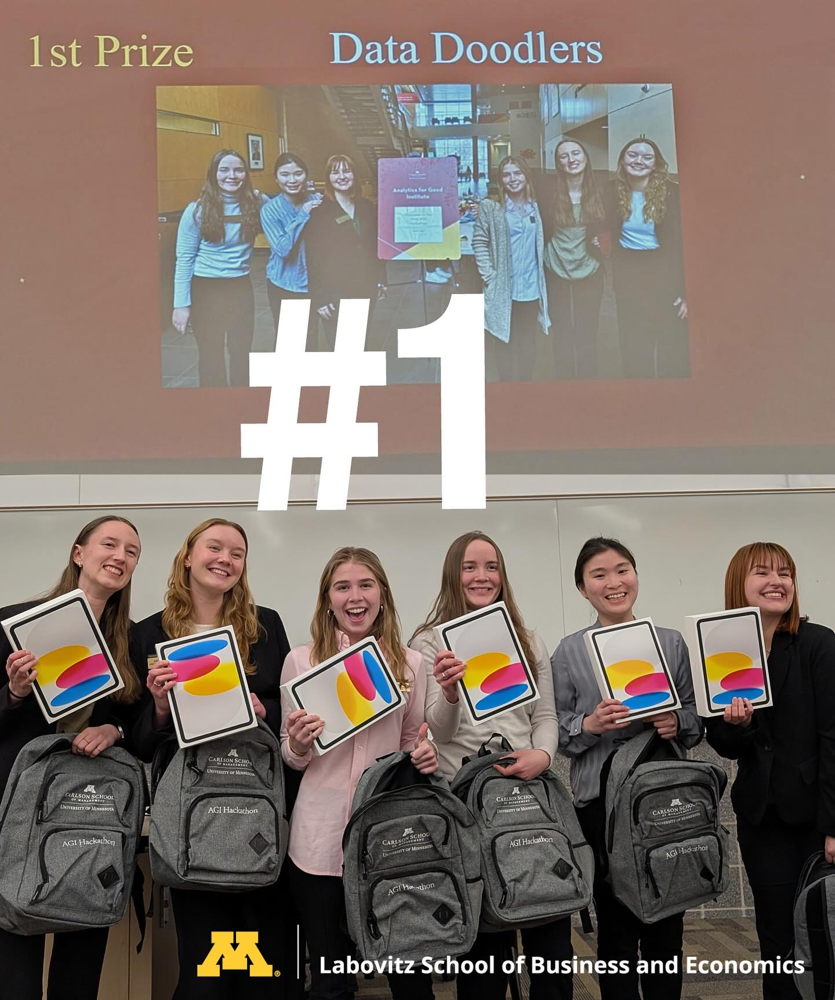

Core courses
- Finance and accounting
- Business law
- Economics
- Information technology
- Management
- Marketing
- Psychology
- Writing and communications
- Mathematics
This page expands on courses, software, skills, and the distinctive advantages that shape the Consumer Insights & Analytics experience.
Students use industry software tools to summarize, clean, and analyze consumer and transaction data.
Students learn to identify customer needs, sales trends, and business opportunities from data.
Insights are presented as solutions to business problems, helping students communicate clearly with decision-makers and stakeholders.
Students have 24/7 access to a state-of-the-art analytics lab, specialized software tools, industry datasets, and experiences that extend learning beyond the classroom.
The program supports growth in technical ability, business communication, and career readiness while helping students prepare for organizations that rely on data-driven decision-making.
Steve Sharkey leads the CIA Club and brings more than 30 years of experience in retail, broadcasting, and publishing.
The club experience emphasizes experiences, access, and cohorts so students can grow through opportunities, connections, and community.

Several CIA students recently competed in the undergraduate division of the Analytics for Good Hackathon at the University of Minnesota Carlson School of Management.
Team Data Doodlers included Jordan Carlson, Megan Gehling, Ella Green, Reilly Sullivan, Laura Tsai, and Natalya Wilkes, and the team earned first place in the competition.
For more information about the program or CIA Club, contact Steve Sharkey at ssharkey@d.umn.edu.